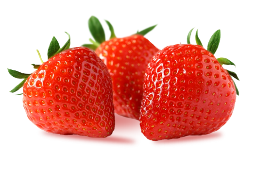

Ananas
Botaniquement parlant, l’ananas n’est pas un fruit, mais une multitude de baies qui se sont formées après la fusion des fleurs sur l’épi. Chacun des « yeux » ou renflements de l’écorce constitue une baie, donc un fruit.
propriétés anti-inflammatoires
excellente source de manganèse
source de vitamine C
Citron vert
Que ce soit pour améliorer la santé en général, pour contrôler votre poids, ou pour combattre divers trouble, les qualités du citron vert peuvent être très utiles.
Amélioration du système immunitaire
Bon pour perdre du poids
propriétés anti-inflammatoires

Fraises
Ce petit fruit rouge est riche en vitamines et minéraux et possède de nombreux bienfaits pour la santé.
sources de fibres
sources de manganèse
riches en vitamine C